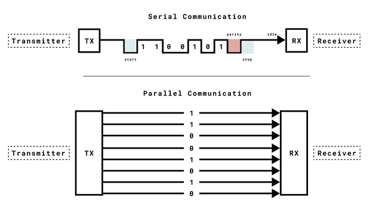
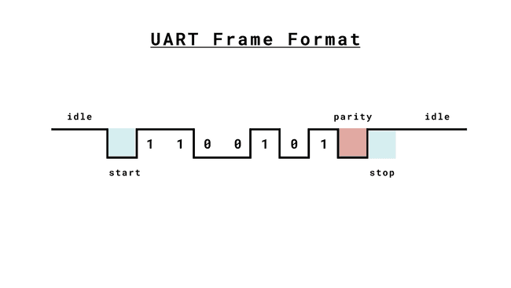

2024-04-13
This is the protocol that arduino boards use to communicate back with the
computer via Serial.print().
The basic properties of this protocol are:
In many cases UART has been replaced by either I2C or SPI, but it is nonetheless still used for low-speed low-throughput projects because it is very simple and low-cost to implement given that it requires less wires/ports. More on that later.
The serial class allows you to send or receive data from the computer to the arduino, or to another device connected to the arduino via TX and RX pins.
The difference is that:
Serial class.Serial1 class.Serial2 and Serial3.The UART interface available via Serial has the following methods:
Serial.begin() begins serial communication, with a specified baud rate. You
can pick either 9600 or 115200. This function is usually called during the
setup() function on arduino sketches.Serial.print() prints the UART data in the Serial Monitor.Serial.printl() is the same as .print() but adds a new line at the end.Serial.available() checks if serial data is available when sending commands
from the Serial Monitor.Serial.read() reads data from the serial port.Serial.write() writes data to the serial port.UART serially sends one bit at a time. The series of bits has a starting bit, followed by several data bits, an optional parity bit, and one or more stopping bits.
Given that UART communication doesn't rely on a clock signal, it relies on a pre-determined baud rate to figure when to send/read a bit.

The advantage here is that synchronous communication only requires one wire, so this can make your circuit cheaper and easier to manufacture.
Also consider that the transmitter and the receiver must have the same common ground to be able to interpret LOW/HIGH signals with the right reference.
The key components of UART include the transmitter, receiver, and baud rate. The transmitter collects data from a source, formats it into serial bits, and sends it via a TX (Transmit) pin. The receiver receives it via a RX (Receive) pin, processes incoming serial data and converts it into parallel data for the host system. The baud rate determines the speed of data transmission.
Important things to know about baud rates:
A way to circumvent the problem from the last point is via UART Flow Control
UART Flow Control is a method for slow and fast devices to communicate with each other over UART without the risk of losing data. Consider the case where two units are communicating over UART. A transmitter T is sending a long stream of bytes to a receiver R. R is a slower device than T, and R cannot keep up. It needs to either do some processing on the data or empty some buffers before it can keep receiving data.
R needs to tell T to stop transmitting for a while. This is where flow control comes in. Flow control provides extra signaling to inform the transmitter that it should stop (pause) or start (resume) the transmission.
Several forms of flow control exist. For example, hardware flow control uses extra wires, where the logic level on these wires define whether the transmitter should keep sending data or stop. With software flow control, special characters are sent over the normal data lines to start or stop the transmission.

The message starts with a start bit, which is always LOW. The receiver starts to prepare itself for receiving a message.
Followed by that, the message includes the data bits. Those bits can vary in number, and this number needs to be agreed upon by both the receiver and the transmitter. A common length is 8 bits (1 byte), but this can vary based on the application. This length is also referred to as character size.
The parity bit is an error-checking mechanism to detect transmission errors. A common use is to set the parity bit as 1 if the number of "1" bits in the data message is odd, and 0 if it is even.
The stop bit marks the end of the message. The polarity may vary depending on the system, and some times two stop bits may be applied.
You can pop a monitor open and write characters and press enter to send them to the arduino with the script below:
#include <Arduino.h>
char incomingByte = 0;
void setup() {
pinMode(LED_BUILTIN, OUTPUT);
Serial.begin(9600);
}
void loop() {
if (Serial.available()) {
digitalWrite(LED_BUILTIN, HIGH);
incomingByte = Serial.read();
Serial.print("received: ");
// Print byte in decimal.
if (incomingByte == '\n') {
Serial.println("\\n");
} else {
Serial.println(incomingByte);
}
digitalWrite(LED_BUILTIN, LOW);
}
}